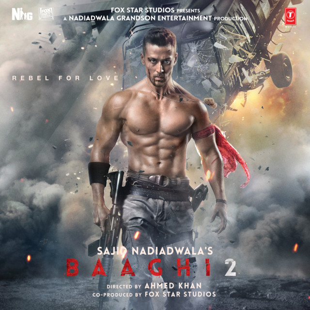

Jubin Nautiyal
Music Artist
Jubin Nautiyal is an Indian singer. Jubin was awarded Upcoming Male Vocalist of the Year at 8th Mirchi Music Awards, 2016 for his song "Zindagi Kuch Toh Bata (Reprise)" from Bajrangi Bhaijaan, another one of his achievements is the Rising Musical Star Award (2015) received at Zee Business Awards. Early in his career, he sang many songs, including several hit songs, for Hindi films. He has also recorded songs for films in various Indian languages. His famous songs include "Tum Hi Aana" and "Wafa Na Raas Aayee and "Bewafa Tera Masoom Chehra", his recent song "Lut Gaye" become a huge hit with 861 million views in 5 months.
350 Tracks | 250 Albums
01
Lut Gaye
Jubin Nautiyal
02
Tum Hi Aana
Jubin Nautiyal
03
Taaron Ka Sheher
Jubin Nautiyal
04
Socha Hai
Jubin Nautiyal
05

Lo Safar
Jubin Nautiyal
06
Agar Tum Sath Ho
Jubin Nautiyal
07
Kisi Se Pyarr Ho Jaye
Jubin Nautiyal